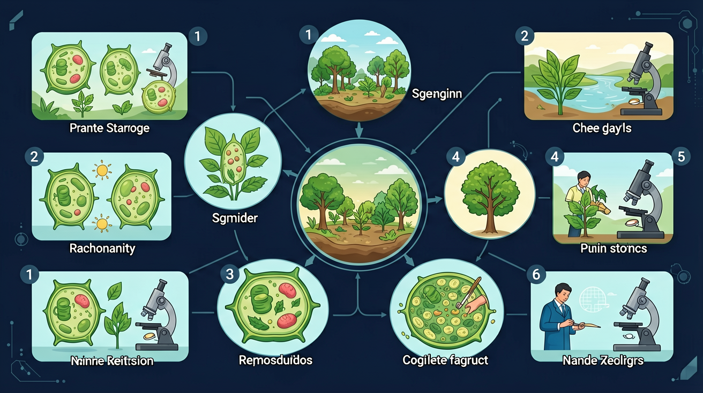

揭秘生产者、消费者、分解者在生态系统中的角色与功能

🎯 能说出生态系统的四大组成成分及其作用
🎯 能判断常见生物在生态系统中的角色
🎯 能分析简单食物链的能量流动关系
❓ 为什么说森林是‘地球之肺’？
❓ 如果池塘里的鱼突然全死了，整个生态系统会崩溃吗？
❓ 我们吃的蘑菇算生产者还是分解者？
学完这一课，这些问题你都能自信地回答。
一片森林、一个湖泊、一块农田……这些都是生态系统。但一个生态系统究竟由哪些部分组成？
如果把森林中的树全部砍掉，动物和微生物还能继续生存吗？不同组成成分之间有什么依赖关系？
本课将带你认识生态系统的生物成分（生产者、消费者、分解者）和非生物成分，理解各组分的功能与联系。
绿色植物，通过光合作用制造有机物
动物，直接或间接以植物为食
细菌和真菌，分解有机物为无机物
阳光、空气、水、土壤等
生态系统的能量最终来源是？
下列属于分解者的是？
观察生态园中的一个区域，找出其中的生物，并尝试绘制一条食物链。
在一定地域内，生物与其生活的无机环境相互影响、相互作用，共同构成的统一整体，叫做生态系统。
🌳 森林生态系统 | 🌊 湖泊生态系统 | 🌾 农田生态系统 | 🏙️ 城市生态系统
绿色植物（及部分微生物），光合作用固定太阳能，是生态系统的能量基础
植食动物（初级）→肉食动物（次级）→ 顶级捕食者，消费有机物并传递能量
细菌、真菌等微生物，将有机物分解为无机物，实现物质循环利用
包括：阳光（能量来源）、空气（CO₂/O₂）、水（生命介质）、土壤（矿质元素）、温度等。
非生物成分为生物提供物质和能量，生物活动也不断改变非生物成分。
点击下方按钮，观察生态系统各组成成分之间的能量流动示意图。
第一步：分清成分：先列出非生物成分（阳光、空气、水、土壤等）与生物成分（生产者、消费者、分解者），不遗漏、不重复。
第二步：明确作用：生产者制造有机物，是生态系统的基石；消费者促进物质循环与能量流动；分解者把有机物分解为无机物，归还无机环境。
第三步：找联系：沿着“生产者→消费者→分解者”梳理食物链和食物网，再看物质如何循环、能量如何单向流动。
常见误区：认为分解者可有可无。若没有分解者，动植物遗体就会堆积，物质无法循环，生态系统终将崩溃。
情境：以一片温带落叶阔叶林为例，看一个完整生态系统包含哪些部分。
分析：非生物成分：阳光、空气、水、土壤、温度；生产者：乔木、灌木、草本植物，通过光合作用把无机物合成有机物；消费者：昆虫、鸟、松鼠等；分解者：腐生细菌和真菌，把遗体分解为无机物归还环境。
结论：四类成分缺一不可：生产者提供能量与有机物基础，分解者完成物质循环，二者共同维系生态系统的稳定。
把生态系统拆成非生物部分（阳光/水）和生物部分（生产者/消费者/分解者）
生产者通过光合作用制造有机物，是能量流动的起点
比较池塘和森林生态系统：前者水域为主，后者陆地生物更多
观察校园花坛：蚂蚁（消费者）搬运落叶（生产者），霉菌（分解者）分解枯枝
设计火星基地生态系统：需要人工光源代替阳光，培养藻类作为生产者
把下面的生物/物质拖到正确的类别框中
先独立作答，再点选项查看对错与错因。
在生态园中，下列哪项属于生物因素？
生态系统中，生产者通常是指？
在生态园中，分解者的主要作用是？
在生态系统中，____通过光合作用制造有机物，被称为生产者。
答案：绿色植物
绿色植物能够利用阳光进行光合作用，制造有机物，是生态系统中的生产者。
生态系统的非生物因素包括____、____和____等。
答案：水、空气、阳光
水、空气和阳光是生态系统中重要的非生物因素，为生物提供生存条件。
（中考题）池塘生态系统的正确食物链是？
若某生态系统鼠类灭绝，最先受影响的是？
设计封闭生态瓶时，必须放入的是？
✅ 蘑菇属于分解者，依赖现成有机物
💡 混淆光合作用与腐生营养
✅ 蚯蚓/蜣螂属于分解者
💡 忽视分解者包含部分动物
生态系统四成分：生产消费和分解，还有无机环境配。
生产者 → 光合作用 → 有机物（能量入口）
消费者 → 吃与被吃 → 能量传递
分解者 → 分解有机物 → 归还无机物（物质循环）
口诀：阳光水土打基础，植物生产是支柱，动物消费来帮忙，菌菌分解收尾忙
类比：生态系统像超市：货架（生产者）供货，顾客（消费者）购买，清洁工（分解者）回收